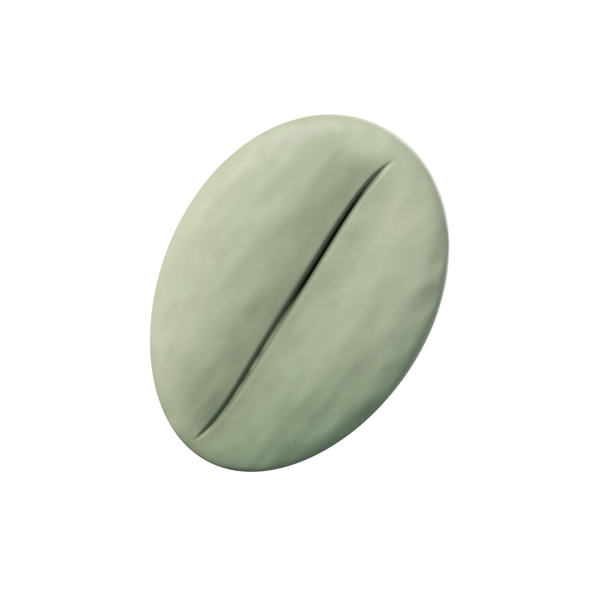
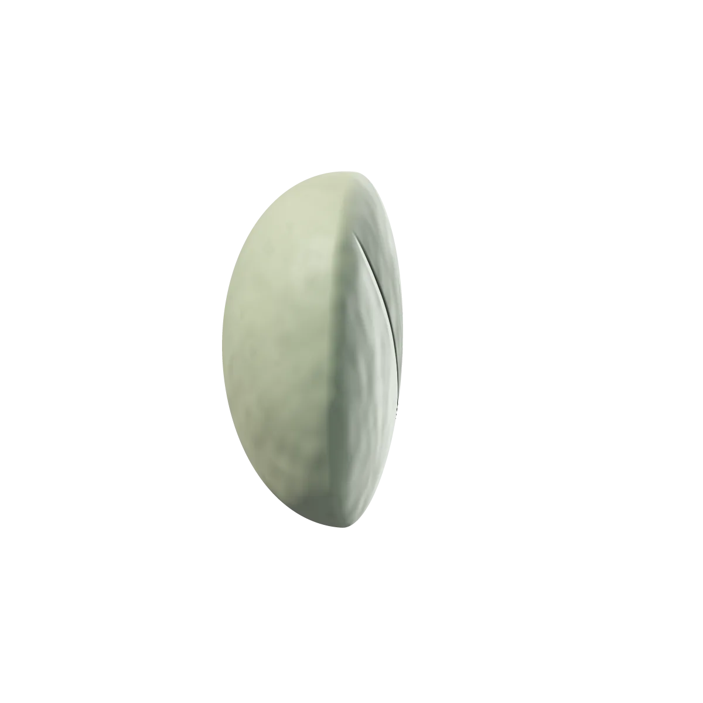
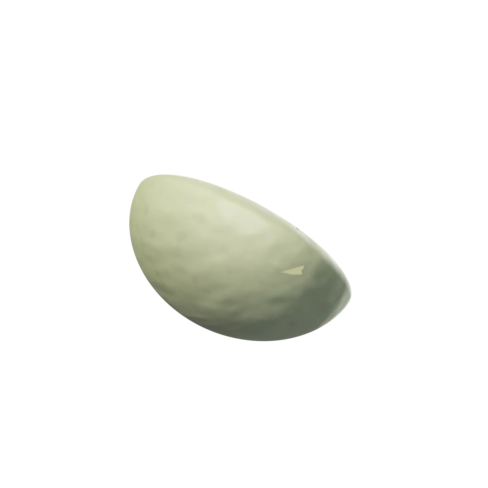
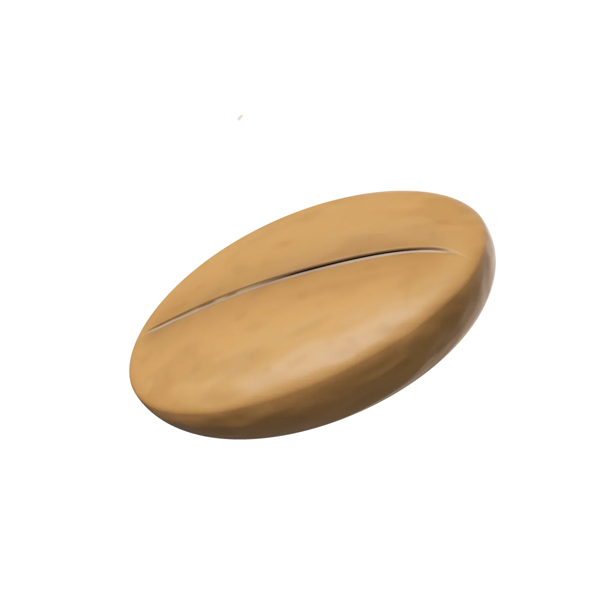
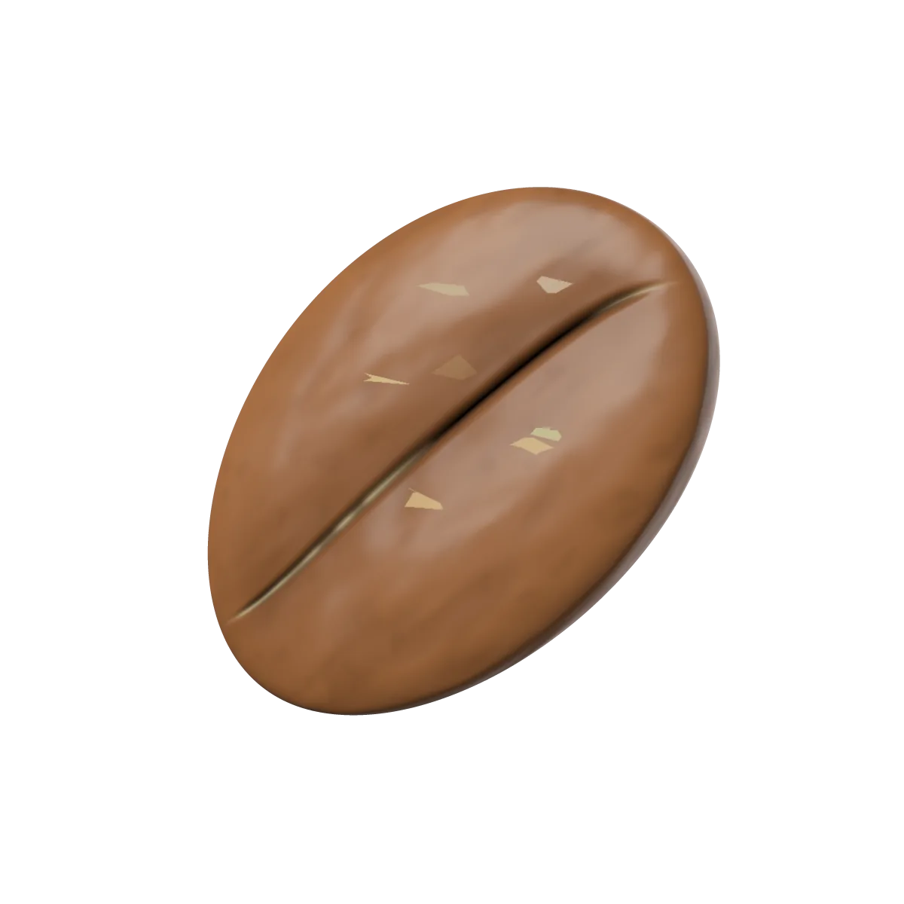
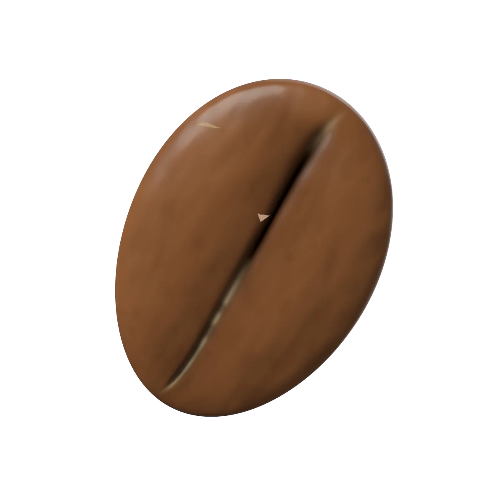
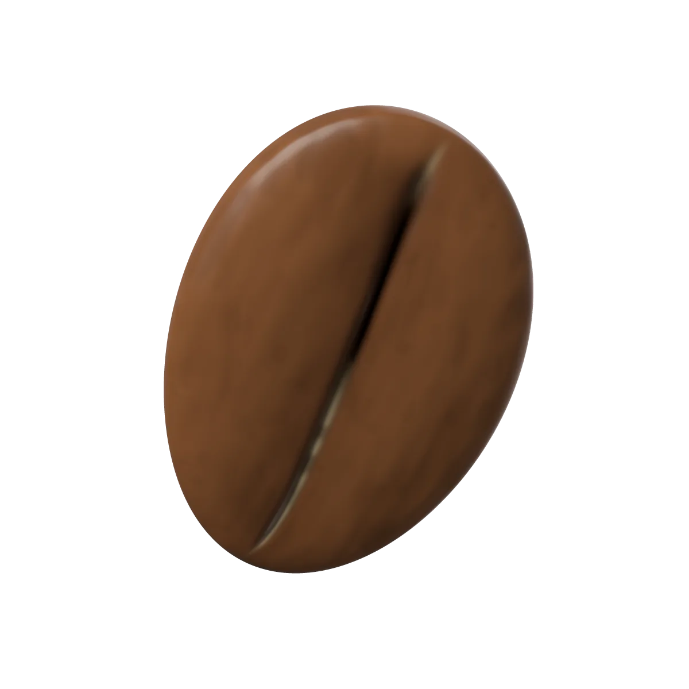
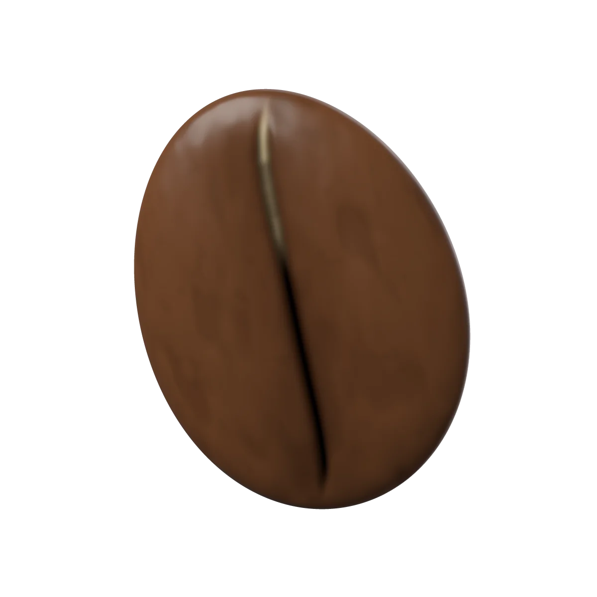

Kiambu, Kenya
Blackcurrant, grapefruit, cane sugar
- Variety
- SL28 and SL34
- Process
- Washed
- Altitude
- 1,800 m
- Roast
- Light
Grown by smallholder families who deliver ripe cherries to a cooperative washing station in the hills north of Nairobi.
Batch 041’s roast curve, illustrated and rounded.

0:00, drum at 200 °C
One Kiambu bean, followed from green coffee to drop. Eighteen kilos of it, roasted on Monday 12 October.

0:00 to 1:05, 200 to 95 °C
The green beans drop into a drum preheated to about 200 °C. The probe now sits among cold beans, so its reading falls fast and turns at about 95 °C.
How much heat goes in now sets the pace for the whole roast.

1:05 to 4:20, 95 to 150 °C
Green coffee holds about 10 to 12 % water. For the next three minutes the heat mostly drives it out; the bean stays green and smells of hay.
Even drying lets the centre keep pace with the surface.

4:20 to 8:10, 150 to 196 °C
Above about 150 °C, sugars and amino acids react. The bean turns yellow, then tan, then cinnamon, and the drum smells of toasted bread.
This stretch builds the sweetness and body in the cup.

8:10, 196 °C
Steam and carbon dioxide build up until the bean splits along its centre cut with an audible crack. It swells and sheds the last of its chaff.
From here on, every few seconds shift the flavour.

8:10 to 9:40, 196 to 204 °C
We keep the heat gentle for a minute and a half while the rise slows. Kiambu’s blackcurrant and grapefruit stay bright.
A longer development would trade that fruit for roast flavour.

9:40, 204 °C
At 204 °C the beans fall into the cooling tray, where stirring and air stop the roast within minutes. Batch 041 is a light roast.
| Moment | Roast time | Bean temperature |
|---|---|---|
| Charge | 0:00 | 200 °C |
| Turning point | 1:05 | 95 °C |
| End of drying | 4:20 | 150 °C |
| First crack | 8:10 | 196 °C |
| Drop | 9:40 | 204 °C |
Every month we roast two small lots and ship them within 48 hours. The bean you just followed is one of October’s.
Blackcurrant, grapefruit, cane sugar
Grown by smallholder families who deliver ripe cherries to a cooperative washing station in the hills north of Nairobi.

Red apple, panela, cocoa nib
Grown on a family farm that dries its coffee slowly on raised beds under shade cloth for about two weeks.
Batch 041 goes into the drum: 18 kg.
It ships within 48 hours of roasting, in a resealable valve bag that fits through the letterbox, with notes on the farm and a recipe.
We announce the next two lots.